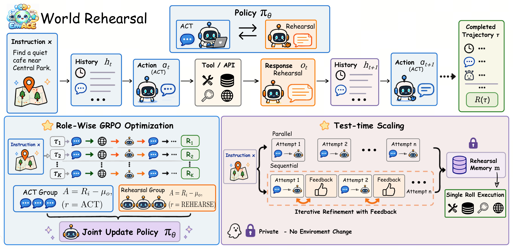

01研究背景与问题定义
智能体训练通常把环境当成外部响应器：模型采取动作，工具或模拟器返回观察，下一步才能继续。这使训练规模受制于环境服务，也让模型依赖真实交互来判断动作后果。即使部署时增加推理，它仍可能只是在反复思考，而没有能够展开行动后状态变化的机制。
EnvACE 改变了策略与环境之间的分工。同一个模型既生成行动，也生成该行动后的环境响应，让训练轨迹在参数内展开。部署前再用这些学到的响应能力做私有排演，整理经验后才进入真实环境。核心问题因此是：模型能否学到对规划有用的环境动态，而不只是生成看起来合理的对话。
| 阶段 | 环境响应来自哪里 | 状态影响范围 |
|---|---|---|
| 训练排演 | 共享策略的 Rehearse 角色 | 形成训练轨迹，更新模型参数 |
| 测试私有排演 | 训练后的同一策略 | 只改变内部计划与排演记忆 |
| 承诺执行 | 外部真实环境 | 动作真正产生外部结果 |
02方法与技术路线
方法由 act–rehearse 交替轨迹、分角色优势计算和测试时排演组成。共享参数使行动与动态建模相互影响，角色区分则避免把两种输出简单混在一个统计基线中。
Act
读取 h，生成结构化工具动作或任务输出。
Rehearse
读取 h 与刚生成的动作，预测响应 ô；不向外部环境请求该响应。
更新历史
追加动作与预测响应，下一次 Act 继续；直到轨迹终止。
部署前：私有排演
多次从初始上下文试演；并行模式彼此独立，顺序模式可读前次评估与修正建议。
部署：真实执行
将试演和自评合成为 rehearsal memory；行动者读取它，在外部环境完成一次承诺执行。
World Rehearsal 怎样让轨迹自行展开
在历史 h 下，Act 先生成动作 a；Rehearse 再以 h 和 a 为条件生成预测观察 ô，追加后进入下一轮。这个先后顺序使后续决策依赖模型自己推演的环境变化，训练也必须面对早期预测误差如何传到更晚的行动。
它不是为每个环境另接一个独立世界模型，而是同一策略通过角色条件承担两种功能。减少外部响应依赖的同时，模型必须学会可执行工具语义和状态约束；一个语言上流畅的响应并不一定是真实动态。
Role-wise GRPO 的信号究竟分到了哪里
每条排演轨迹得到一个终局奖励，其中所有模型输出继承该轨迹奖励。论文按角色收集输出，分别计算 Act 与 Rehearse 的奖励基线，再用对应基线构造优势；两种角色最终仍更新同一组参数。
分角色基线并没有创造逐步正确的环境标签，也没有分别证明哪次响应预测造成成功。它改变的是信用的参照群体，让行动输出与排演输出各自在同类输出中比较；因而“世界动态被内化”的解释，仍需与预测质量、真实任务效用一并检验。
测试时先排演，再承诺执行
并行排演都从同一初始任务出发，相互不读历史；顺序排演则读取之前的想象轨迹及其评估和修正建议。最后模型把全部尝试合成紧凑排演记忆，真实执行读取的是这份经验，而不是直接把某条想象轨迹当外部已发生事实。
私有排演不会真的购买、提交或修改外部状态，这是避免试错副作用的关键。但排演本身由同一模型自评，若错误动态与错误评估相互吻合，多次排演也可能强化同一种错觉。论文并未把自评等同于外部验证。
论文原始结构图 · 点击对照

03实验设计与结果分析
内化排演是否比普通增加推理更有效
| 条件 | τ² 平均 | BFCL 平均 | 总体 |
|---|---|---|---|
| 不增加测试排演 | 31.4 | 41.9 | 36.7 |
| 并行排演 / Base | 32.2 | 41.4 | 36.8 |
| 并行排演 / EnvACE | 38.0 | 43.9 | 40.9 |
| 顺序排演 / Base | 31.0 | 38.8 | 34.9 |
| 顺序排演 / EnvACE | 34.8 | 42.3 | 38.5 |
普通 Base 排演几乎没有总体收益，顺序排演还下降；EnvACE 的两种排演都改善。这比只看训练后总分更能支持“排演能力必须被训练，而非写一条想象提示即可”的观点。并行模式更好，也提示顺序自评可能把早期误判带入后续尝试。
论文观察到增加排演次数并非始终改善：N 从 1 到 2 有收益，到 3 出现回落。因此测试时扩展是能力、误差和预算之间的折中，不是单调的计算增益。
整体训练配方的收益有多大
| 系统 | 总体分数 ↑ |
|---|---|
| Qwen3-8B | 28.48 |
| EnvScaler-8B | 31.92 |
| EnvACE-8B | 32.91 |
整体结果支持系统有效，但与 EnvScaler 仅相差 0.99 分，比对原始 Qwen 的 4.43 分更能反映强训练对照下的余量。各系统训练安排不同，这一表不能单独隔离角色基线或某项动态建模机制。测试前排演还增加推理开销，应与真实执行次数减少的可能收益分开核算。
04贡献、局限与综合评价
把动作后果建模纳入行动策略，是实质贡献
EnvACE 将行动和响应建模放到同一个可训练策略中，使测试时规划有了可以展开的对象。更有说服力的证据是：同样增加排演，未训练模型收益弱，而 EnvACE 能利用它；这比单一榜单提升更贴近论文的中心假设。
角色分离解决统计参照，未直接解决世界误差
两个角色共享权重，也继承同一个终局奖励。分角色基线能避免把不同输出类型简单混比，却没有对每一步预测提供真实环境校验；后续成功仍可能补偿早期动态误差。若只从最终任务改善推断学到了忠实世界模型，会把规划有用性和转移真实性混在一起。一个预测不完全真实却保留关键任务变量的模型也可能有价值，因此应分别测环境响应保真度、行动排序正确率和最终任务收益。三者的关系比“模型是否会模拟世界”的单一判断更能揭示机制。
任务奖励能否防止自洽却错误的世界
训练目标主要通过终局奖励筛选整个想象过程。若评估器也依赖生成轨迹，它可能接受内部一致却不符合外部环境的情节。真实环境上的最终收益缓解了这一疑虑，却仍没有证明排演每一步都忠实于真实转移。
关键验证应把真实环境状态固定，对相同动作比较预测响应与实际响应，并按排演长度追踪误差；再检查规划收益是否来自更准确的响应，而不是额外的语言反思。现有结果表明参数内排演是一条有用的规划路线，其适用边界取决于动态可预测性与自评可靠性。